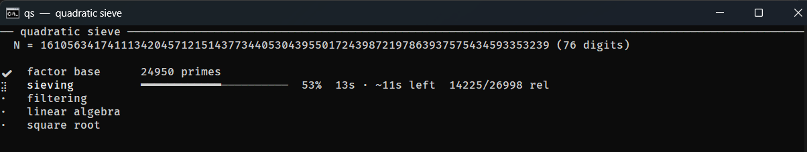
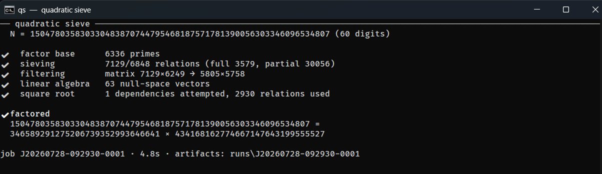
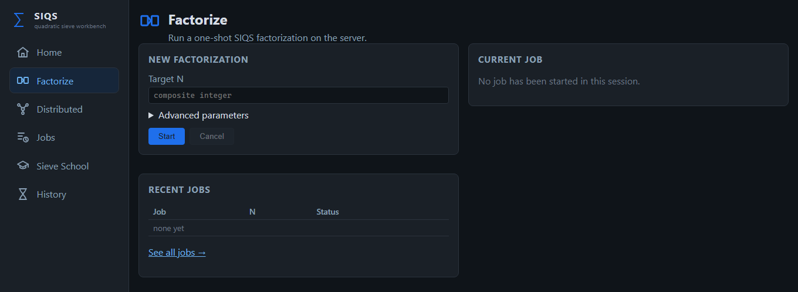
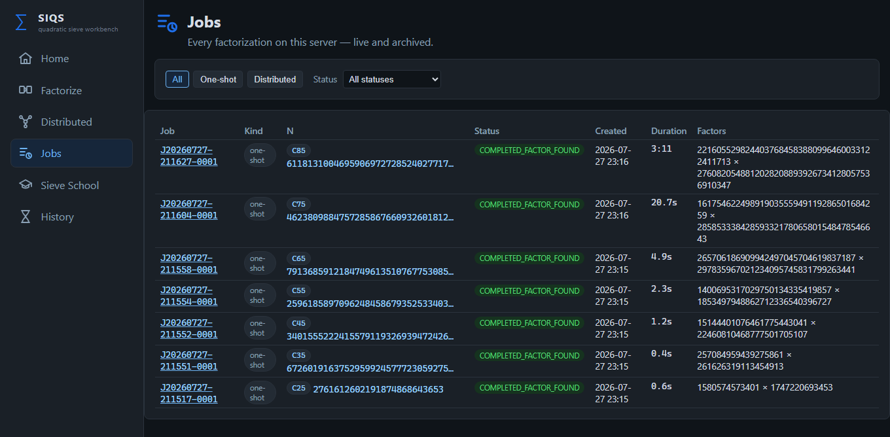
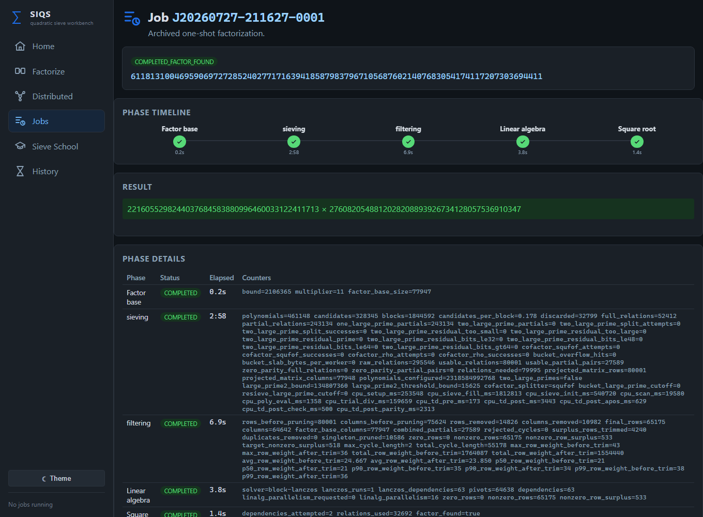
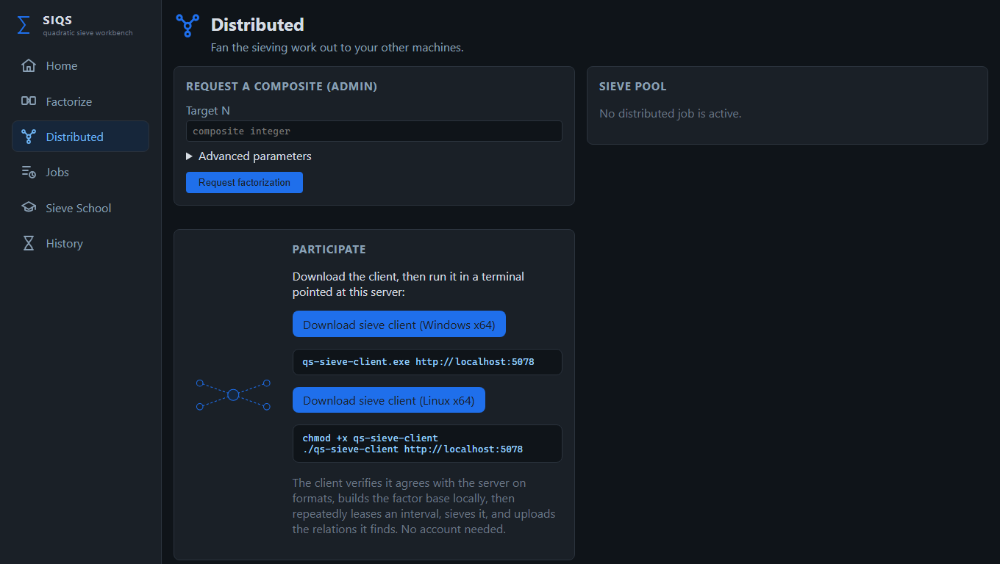
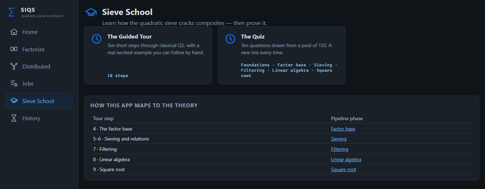

Factor numbers.
Understand how.
An open-source implementation of a classic integer-factorization algorithm.
A factorization workbench and a readable implementation of the self-initializing quadratic sieve — routinely splitting 85–100 digit composites on ordinary hardware, with every phase visible and documented.
I just want to factor something.
Install the SDK, build once, and point the qs binary at a
number. Sensible defaults are chosen from its digit count — no tuning required.
Install the .NET 10 SDK, then clone and build.
git clone https://github.com/JesHansen/siqs.net.git
cd siqs.net
dotnet build -c Release SIQS.slnxThe build produces a qs binary. Point it straight at the number you want factored — no need to dotnet run the project again.
.\QS\bin\Release\net10.0\qs.exe 150478035830330483870744795468187571781390056303346096534807On Linux or macOS, run ./QS/bin/Release/net10.0/qs (drop the .exe).
A live terminal view tracks every phase — factor base, sieving, filtering, linear algebra, square root — with a progress bar, elapsed time, and an estimate of the time left.

When it finishes, each phase collapses to a one-line summary above the factorization.

Want the raw numbers? --debug restores the full per-phase counter dump, and --quiet prints only the factor product to stdout so you can pipe qs into a script.
Prefer buttons over terminals? Start the web workbench and open http://localhost:5078.
dotnet run -c Release --project SIQS.UI/SIQS.UI.csproj --urls "http://localhost:5078"
That's the whole workflow. A prime input exits cleanly with “no non-trivial
factor”; Ctrl+C cancels a run and leaves its artifacts resumable with
--resume. Curious what's happening under the hood?
Read the deep dive.
Real numbers, real hardware.
Each rung is one end-to-end factorization of a fresh, balanced semiprime — two primes of equal length, the hardest split for a given digit count — with default auto-tuned parameters. No cherry-picking, no warm caches.
Every ten digits multiplies the work several-fold. The sub-second rows are dominated by process start-up and JIT warm-up, not the sieve itself.
Bars are log-scaled to fit the growth curve; each C n is an n-digit composite split into two equal halves.
One solution, five ways in.
A working factorizer, a live web workbench, distributed sieving, and interactive learning material — all in a single .NET solution.
Factor an integer
Run a one-shot factorization from the qs command line or the web
Factorize page. Every parameter — factor-base bound, multiplier, sieve
interval, large-prime bounds, parallelism — has a digit-size default and a CLI override.
Watch a live run
Phase status, elapsed time per phase, relation counters, matrix dimensions, and run artifacts are retained for inspection in the Jobs view. Interrupted runs resume from their workspace.
Distribute the sieve
Sieving dominates the cost, so the server can lease disjoint slices of polynomial work to volunteer clients over HTTP. Workers independently rebuild and verify the job parameters before sieving a single value.
Run self-contained workers
Download single-file sieve clients for Windows x64 and Linux x64 straight from the workbench — no .NET runtime required on the worker machine.
Learn it in Sieve School
A guided tour through a worked factorization, an animated sieve window, topic quizzes, and a historical timeline from Fermat and Kraitchik through Pomerance and RSA-129.
Work a stage at a time
Five focused CLI tools — qs-fb, qs-sieve, qs-filter,
qs-linalg, qs-sqrt — run each pipeline phase standalone over plain
text artifacts you can read and diff.
Everything serves one line of algebra.
The whole machine exists to build one congruence of squares. When
X ≢ ±Y, gcd(X − Y, N) reveals a factor. Everything below is bookkeeping
in service of this single line.
Factor base qs-fb → factor_base.txt
Pick a multiplier, then collect the primes p for which the scaled target is a quadratic residue — the only primes that can ever divide a sieve value.
Sieving qs-sieve → relations_*.txt
Generate families of polynomials and sieve them over a symmetric interval, adding logarithmic weights where factor-base primes divide. Survivors become relations; near-misses become large-prime partials. This is the hot path — and the part that distributes.
Filtering qs-filter → filtered_matrix.txt
Combine partial relations through large-prime graph cycles, remove duplicates and singletons, and trim the result into a lean sparse matrix over GF(2).
Linear algebra qs-linalg → dependencies.txt
Run Block Lanczos over GF(2) to find non-empty sets of relations whose exponent vectors XOR to zero — each one a candidate congruence of squares.
Square root qs-sqrt → factors.txt
Reconstruct X and Y from a dependency, verify every exponent sum is even, and take GCDs against N. A non-trivial answer is your factor.
One command, qs.exe, runs all five phases in a single process with live console
progress — the per-phase tools exist so you can study, debug, or benchmark any stage in
isolation against hand-crafted inputs.
The whole system, before you clone anything.
The SIQS.UI Blazor app is the easiest way to explore
SIQS.NET — start a run, watch every phase, browse archived jobs and artifacts, hand sieving
out to other machines, and learn the method.

Start a run from the browser.
Every tuning knob has a digit-size default and an override behind Advanced parameters. The live card follows the current phase to completion.

Every factorization, live and archived.
Target size, status, wall-clock duration, and discovered factors — filterable by kind and status, each one openable for the full record.

A per-phase timeline and every counter.
Elapsed times, the final congruence-of-squares result, factor-base size, relations found, matrix dimensions, Block Lanczos dependencies — the complete set each stage recorded.

Share sieving across machines.
Submit a job whose sieving is spread over a pool, and download self-contained Windows x64 and Linux x64 workers — no runtime required.

A guided tour and a randomized quiz.
Walk a worked factorization step by step, each one linked to the pipeline phase it explains — from foundations through square roots.
Divided by algorithmic responsibility.
Phase libraries with typed APIs, thin CLI front-ends, a shared contracts library, and an orchestration pipeline that both the console capstone and the web UI sit on top of.
Debugging a factorization is reading files, not attaching debuggers.
| Component | What it is |
|---|---|
qs.exe | The capstone: factors a number end-to-end in one process with live progress, resumable workspaces, and meaningful exit codes. |
qs-fb, qs-sieve, qs-filter, qs-linalg, qs-sqrt | Standalone per-phase tools that read and write the documented text artifacts. |
SIQS.UI | Blazor web workbench: Factorize, Jobs & artifacts, Distributed coordination, Sieve School, and history. |
SIQS.Pipeline | Orchestration library — owns defaults, runs phases in order, tracks the job workspace, reports progress. |
SIQS.Overlord + qs-sieve-client | Distributed sieving: the coordinator leases work slices; the self-contained client verifies, sieves, and uploads relations. |
Factorbase, Sieving, Filtering, LinearAlgebra, SquareRoot | The five phase libraries — the actual mathematics, each with its own xUnit test project. |
CompositeGenerator | Generates fresh RSA-shaped semiprime targets: CompositeGenerator.exe 55 | qs.exe. |
SIQS.Benchmarks | BenchmarkDotNet harness isolating the hot kernels — Block Lanczos multiplies and the sieve fill/scan seam. |
Everything is a text file.
Every phase writes plain UTF-8 artifacts —
factor_base.txt, relations_0000.txt,
filtered_matrix.txt, dependencies.txt, factors.txt —
with documented, versioned header contracts. Open any intermediate state of a factorization in
a text editor, diff two runs, or feed a hand-edited file back into the next phase.
Sieving is embarrassingly parallel.
Disjoint polynomial families run on different machines with no coordination beyond handing out assignments. SIQS.NET exploits that.
The Overlord coordinates
The server owns the job: it leases slices of polynomial indices, validates every uploaded relation, re-issues abandoned leases, and runs filtering, linear algebra, and square root centrally once enough relations arrive.
Workers verify, then trust
A client performs a protocol handshake and independently reconstructs the factor base and sieving parameters from the job descriptor. If its reconstruction disagrees with the server's, it declines the job.
A drop-in replacement
The distributed sieve produces byte-compatible relation artifacts, so the rest of the pipeline can't tell the difference between one machine and twenty.
# On each worker — download from the server's Distributed page, then:
.\qs-sieve-client.exe http://your-siqs-server:5078 # Windows
./qs-sieve-client http://your-siqs-server:5078 # LinuxThe distributed API is designed for a trusted LAN. If you expose a server beyond one, put it behind authentication, TLS, firewalling, and rate limits.
Everything from a fresh clone.
No dependencies beyond the .NET 10 SDK.
# Build and test everything
dotnet build -c Release SIQS.slnx
dotnet test --solution SIQS.slnx
# Factor from the command line with the built binary
# (add --parallelism 1 for reproducible artifacts)
.\QS\bin\Release\net10.0\qs.exe <your composite>
# Explore the full workbench in a browser
dotnet run -c Release --project SIQS.UI/SIQS.UI.csproj --urls "http://localhost:5078"
# Generate a fresh 55-digit test target and factor it in one line
CompositeGenerator.exe 55 | qs.exeSIQS.NET is for education, experimentation, benchmarking, and factoring integers you are authorized to factor. It owes an enormous debt to msieve and YAFU — extraordinary factoring software well worth studying.